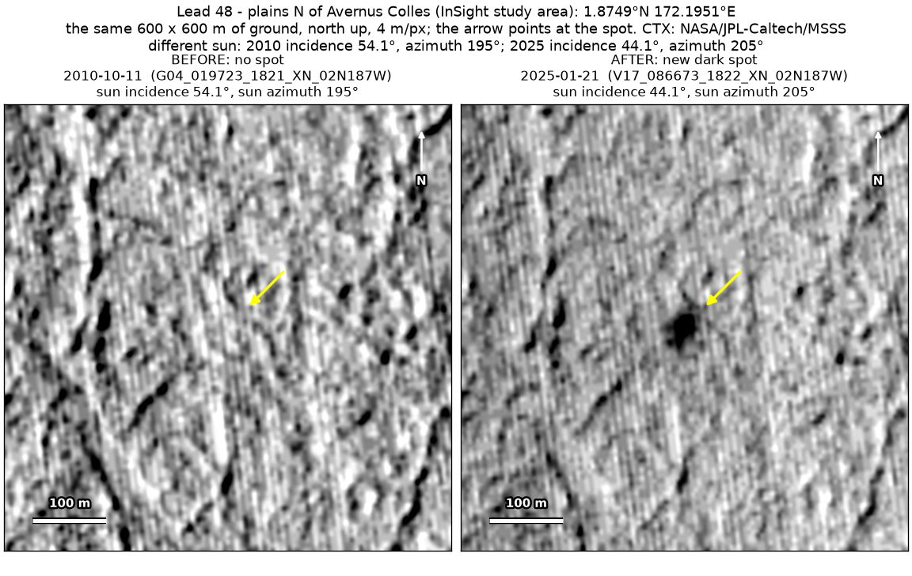
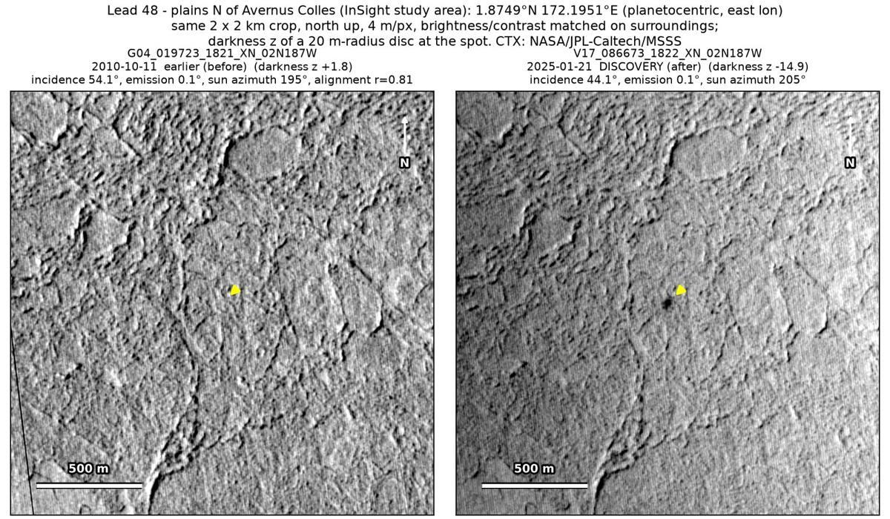
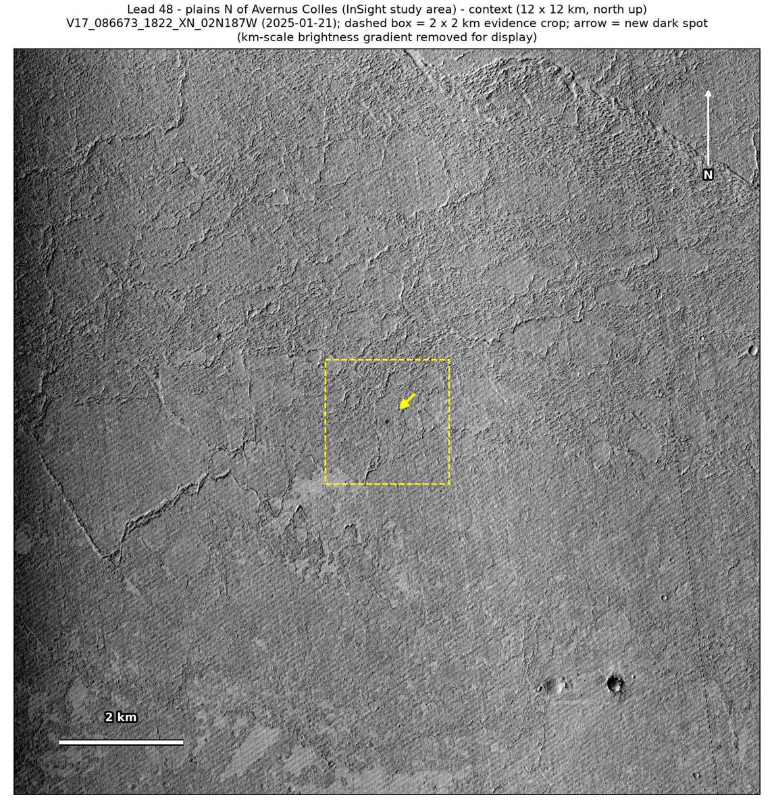

Professor of Mathematics
Paata Ivanisvili
Department of Mathematics, University of California, Irvine

← Possible new impact sites on Mars
Candidate 48: Plains north of Avernus Colles
Promising · roughly 70%

What changed. A compact, very dark spot with a core about 50 × 40 m appeared on the plains north of Avernus Colles between October 2010 and January 2025; so far, one CTX image shows it.
Why it may be a new impact. The only earlier image, from October 2010, lines up well and shows no spot there, while a dark feature 170 m to the west shows in it. Compact, very dark, smooth and round, the spot fits a small new impact better than darker ground exposed by the wind or an image defect. It lies inside the InSight study area of Bickel et al. (2025) but cannot be one of its 123 impacts, which all have HiRISE images; this spot has none.
- Location
- 1.875° N, 172.195° E
- Absent
- 11 October 2010
- Present
- 21 January 2025
- Size
- Compact, very dark spot with a core about 50 × 40 m
- Confidence
- Promising candidate: roughly 70% likely to be a new impact.
- Caveat
- Only one image shows it, and the one earlier image is from more than 14 years before, so it could have formed at any time in that span. No image from the high-resolution HiRISE camera covers it; the nearest ends 41.1 km away. Like every candidate here, it is unconfirmed: see the caveat.

